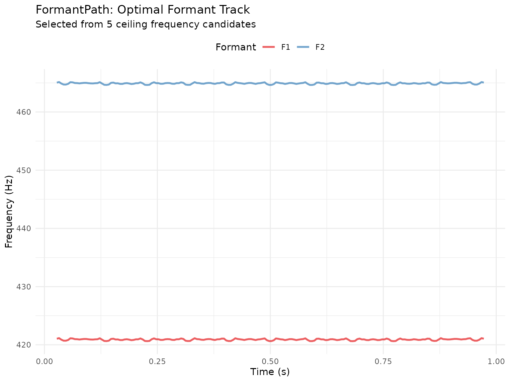
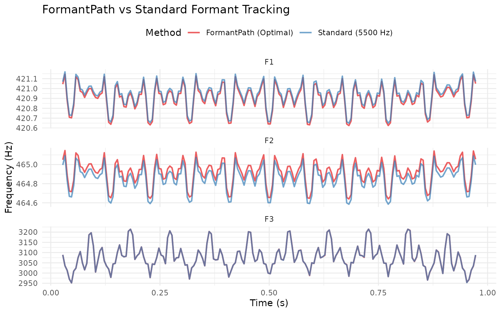

Robust Formant Tracking with FormantPath
Source:vignettes/formantpath-robust-tracking.Rmd
formantpath-robust-tracking.RmdIntroduction
FormantPath is Praat’s advanced formant tracking algorithm that tests multiple formant ceiling values and automatically selects the optimal tracking path. This approach is particularly valuable when:
- Speaker characteristics are unknown (male vs female vs child)
- Audio quality is poor or contains noise
- Standard formant tracking produces spurious values
- You need maximum robustness across diverse speakers
Unlike standard formant extraction (to_formant_burg()),
FormantPath generates multiple candidate formant tracks with different
ceiling frequencies, then uses statistical criteria to select the best
path frame-by-frame.
Why Use FormantPath?
The Ceiling Frequency Problem
Formant tracking quality depends heavily on choosing the right formant ceiling - the maximum frequency for formant detection:
- Too low (e.g., 5000 Hz for female speaker): Misses F3, tracks harmonics as formants
- Too high (e.g., 6500 Hz for male speaker): Detects spurious formants, poor F1/F2 accuracy
- Just right: Accurate F1/F2/F3 tracking with minimal errors
FormantPath solves this by testing multiple ceilings automatically.
Standard vs FormantPath Comparison
# Load example audio
sound <- Sound(system.file("extdata", "test.wav", package = "pladdrr"))
# Standard method (single ceiling) - with error handling
formant_standard <- tryCatch({
sound$to_formant_burg(
time_step = 0.005,
max_formants = 5,
max_frequency = 5500,
window_length = 0.025,
pre_emphasis_from = 50
)
}, error = function(e) {
message("Standard formant extraction failed: ", e$message)
NULL
})
# FormantPath (multiple ceilings) - with error handling
formant_path <- tryCatch({
sound$to_formant_path(
time_step = 0.005,
max_num_formants = 5,
formant_ceiling = 5500,
num_steps_up_down = 2L # Test 5 ceilings: ±10% around 5500 Hz
)
}, error = function(e) {
message("FormantPath extraction failed: ", e$message)
NULL
})
if (!is.null(formant_standard) && !is.null(formant_path)) {
# Extract optimal formant from path
formant_optimal <- formant_path$extract_formant()
cat("Standard method: 1 ceiling (5500 Hz)\n")
cat("FormantPath: ", formant_path$get_number_of_candidates(),
" ceilings tested\n", sep = "")
cat("Ceiling range: ",
round(min(formant_path$get_all_ceiling_frequencies())), " - ",
round(max(formant_path$get_all_ceiling_frequencies())), " Hz\n", sep = "")
} else {
cat("Note: Formant extraction requires readable audio input.\n")
cat("Check that inst/extdata/test.wav is present and readable.\n")
}
#> Standard method: 1 ceiling (5500 Hz)
#> FormantPath: 5 ceilings tested
#> Ceiling range: 4977 - 6078 HzBasic Usage
Creating a FormantPath
The key parameter is num_steps_up_down - how many
ceiling values to test above and below the center:
# Test 3 ceilings (±5% around 5500 Hz)
fp <- sound$to_formant_path(
time_step = 0.005,
max_num_formants = 5,
formant_ceiling = 5500, # Center frequency
ceiling_step_fraction = 0.05, # ±5% steps
num_steps_up_down = 1L # 1 step up, 1 down = 3 total
)
cat("Created FormantPath with:\n")
#> Created FormantPath with:
cat(" Duration:", fp$get_duration(), "seconds\n")
#> Duration: 1 seconds
cat(" Frames:", fp$get_nx(), "\n")
#> Frames: 190
cat(" Candidates:", fp$get_number_of_candidates(), "\n")
#> Candidates: 3
cat(" Ceilings tested:",
paste(round(fp$get_all_ceiling_frequencies()), collapse = ", "),
"Hz\n")
#> Ceilings tested: 5232, 5500, 5782 HzQuerying FormantPath
Inspecting Candidates
fp <- sound$to_formant_path(num_steps_up_down = 2L)
# Get all tested ceilings
ceilings <- fp$get_all_ceiling_frequencies()
cat("Tested ceilings (Hz):\n")
#> Tested ceilings (Hz):
print(round(ceilings))
#> [1] 4977 5232 5500 5782 6078
# Check which candidate was chosen in middle frame
mid_frame <- fp$get_nx() %/% 2
chosen_candidate <- fp$get_candidate_in_frame(mid_frame)
chosen_ceiling <- fp$get_ceiling_frequency(chosen_candidate)
cat("\nAt frame", mid_frame, "(mid-point):\n")
#>
#> At frame 95 (mid-point):
cat(" Chosen candidate:", chosen_candidate, "\n")
#> Chosen candidate: 3
cat(" Ceiling:", round(chosen_ceiling), "Hz\n")
#> Ceiling: 5500 HzStress Values (Quality Metric)
Each candidate has a “stress” value - lower is better:
fp <- sound$to_formant_path(num_steps_up_down = 2L)
# Calculate stress for each candidate
n_candidates <- fp$get_number_of_candidates()
stresses <- sapply(1:n_candidates, function(i) {
fp$get_stress_of_candidate(
candidate = i,
parameters = c(1, 1, 1, 1, 1), # Equal weights
powerf = 1.25
)
})
# Find best candidate
best_idx <- which.min(stresses)
cat("Stress by candidate:\n")
#> Stress by candidate:
print(data.frame(
Candidate = 1:n_candidates,
Ceiling = round(fp$get_all_ceiling_frequencies()),
Stress = round(stresses, 4)
))
#> Candidate Ceiling Stress
#> 1 1 4977 5.8956
#> 2 2 5232 3.9507
#> 3 3 5500 3.7211
#> 4 4 5782 3.0112
#> 5 5 6078 2.9142
cat("\nLowest stress: Candidate", best_idx,
"(", round(fp$get_ceiling_frequency(best_idx)), "Hz )\n")
#>
#> Lowest stress: Candidate 5 ( 6078 Hz )Extracting the Optimal Formant
Automatic Extraction
fp <- sound$to_formant_path(num_steps_up_down = 2L)
# Extract the automatically selected optimal path
frm_result <- fp$extract_formant()
cat("Extracted formant:\n")
#> Extracted formant:
cat(" Duration:", sound$get_duration(), "seconds\n")
#> Duration: 1 seconds
cat(" Frames:", frm_result$get_number_of_frames(), "\n")
#> Frames: 190
# Query formant values
mid_time <- sound$get_duration() / 2
f1 <- frm_result$get_value_at_time(1, mid_time, "hertz")
f2 <- frm_result$get_value_at_time(2, mid_time, "hertz")
f3 <- frm_result$get_value_at_time(3, mid_time, "hertz")
cat("\nFormants at midpoint (", round(mid_time, 3), "s):\n", sep = "")
#>
#> Formants at midpoint (0.5s):
cat(" F1:", round(f1), "Hz\n")
#> F1: 421 Hz
cat(" F2:", round(f2), "Hz\n")
#> F2: 465 Hz
cat(" F3:", round(f3), "Hz\n")
#> F3: 2998 HzManual Path Selection
set_path() and set_optimal_path() let you
override the automatically selected candidate for a time range:
# Set candidate 3 for time range 0.2-0.4s
fp$set_path(tmin = 0.2, tmax = 0.4, selected_candidate = 3)
# Or set optimal path for entire duration
fp$set_optimal_path(
tmin = fp$get_xmin(),
tmax = fp$get_xmax(),
parameters = c(1, 1, 1, 1, 1),
powerf = 1.25
)
# Then extract
frm_result <- fp$extract_formant()Visualizing FormantPath Results
Comparing All Candidates
fp <- sound$to_formant_path(num_steps_up_down = 2L)
# Export optimal formant track
df <- fp$as_data_frame()
# Plot F1 and F2
df_plot <- df[df$formant %in% 1:2, ]
df_plot$formant_num <- df_plot$formant
ggplot(df_plot, aes(time, frequency, color = factor(formant_num))) +
geom_line(alpha = 0.7, linewidth = 1) +
scale_color_manual(
values = c("1" = "#E41A1C", "2" = "#377EB8"),
labels = c("F1", "F2")
) +
labs(
title = "FormantPath: Optimal Formant Track",
subtitle = paste("Selected from", fp$get_number_of_candidates(), "ceiling frequency candidates"),
x = "Time (s)",
y = "Frequency (Hz)",
color = "Formant"
) +
theme_minimal() +
theme(legend.position = "top")
Optimal Path vs Standard
# Get optimal formant from FormantPath
fp <- sound$to_formant_path(num_steps_up_down = 2L)
formant_optimal <- fp$extract_formant()
df_optimal <- as.data.frame(formant_optimal)
df_optimal$method <- "FormantPath (Optimal)"
# Standard single-ceiling with full parameters
formant_standard <- sound$to_formant_burg(
time_step = 0.005,
max_formants = 5,
max_frequency = 5500,
window_length = 0.025,
pre_emphasis_from = 50
)
df_standard <- as.data.frame(formant_standard)
df_standard$method <- "Standard (5500 Hz)"
# Combine and plot
combined_df <- rbind(df_optimal, df_standard)
combined_df <- combined_df[combined_df$formant %in% 1:3, ]
ggplot(combined_df, aes(time, frequency, color = method)) +
geom_line(alpha = 0.7, linewidth = 0.8) +
facet_wrap(~ paste0("F", formant), ncol = 1, scales = "free_y") +
scale_color_manual(values = c(
"FormantPath (Optimal)" = "#E41A1C",
"Standard (5500 Hz)" = "#377EB8"
)) +
labs(
title = "FormantPath vs Standard Formant Tracking",
x = "Time (s)",
y = "Frequency (Hz)",
color = "Method"
) +
theme_minimal() +
theme(legend.position = "top")
Advanced Path Finding
Viterbi-Style Path Optimization
FormantPath can use a Viterbi-like algorithm to find the globally optimal path:
fp <- sound$to_formant_path(num_steps_up_down = 3L)
# Find optimal path with custom weights
fp$path_finder(
q_weight = 1.0, # Formant quality
frequency_change_weight = 1.0, # Smoothness penalty
stress_weight = 1.0, # Model fit
ceiling_change_weight = 1.0, # Consistency bonus
intensity_modulation_step_size = 5.0,
window_length = 0.025,
parameters = c(1, 1, 1, 1, 1),
powerf = 1.25
)
frm_result <- fp$extract_formant()Weight meanings:
-
q_weight: Prefer higher formant quality scores -
frequency_change_weight: Penalize large formant jumps -
stress_weight: Prefer lower stress (better model fit) -
ceiling_change_weight: Prefer consistent ceiling choice
Use Cases
1. Unknown Speaker Demographics
When you don’t know if the speaker is male, female, or child:
# Test wide range of ceilings
fp <- sound$to_formant_path(
formant_ceiling = 5500, # Middle ground
ceiling_step_fraction = 0.10, # ±10% steps (wider range)
num_steps_up_down = 3L # 7 candidates: 4500-6800 Hz
)
ceilings <- fp$get_all_ceiling_frequencies()
cat("Testing range:", round(min(ceilings)), "-",
round(max(ceilings)), "Hz\n")
#> Testing range: 4075 - 7424 Hz
cat("Covers: Male (5000), Female (5500), Child (6500+)\n")
#> Covers: Male (5000), Female (5500), Child (6500+)
frm_result <- fp$extract_formant()2. Noisy or Difficult Audio
For poor quality audio, use more candidates and tighter steps:
fp <- sound$to_formant_path(
formant_ceiling = 5500,
ceiling_step_fraction = 0.05, # Finer steps
num_steps_up_down = 4L, # More candidates (9 total)
window_length = 0.030 # Longer window for stability
)
cat("Using", fp$get_number_of_candidates(), "candidates for robustness\n")
#> Using 9 candidates for robustness3. Segment-Specific Analysis
Compare formants across time-aligned segments using a TextGrid:
textgrid <- TextGrid(system.file("extdata", "test.TextGrid", package = "pladdrr"))
# Get labelled intervals from the phone tier
intervals <- textgrid$get_all_intervals("phones")
intervals <- intervals[intervals$text != "", ]
# test.TextGrid spans 3s but test.wav is only 1s - clip segment
# boundaries to the sound's actual duration before extracting
intervals$end <- pmin(intervals$end, sound$get_duration())
intervals <- intervals[intervals$start < intervals$end, ]
# Analyze each segment with FormantPath
results <- lapply(seq_len(nrow(intervals)), function(i) {
seg <- intervals[i, ]
segment_sound <- sound$extract_part(seg$start, seg$end)
fp <- segment_sound$to_formant_path(num_steps_up_down = 2L)
frm_result <- fp$extract_formant()
df <- as.data.frame(frm_result)
data.frame(
phone = seg$text,
f1 = mean(df$frequency[df$formant == 1], na.rm = TRUE),
f2 = mean(df$frequency[df$formant == 2], na.rm = TRUE)
)
})
phone_formants <- do.call(rbind, results)
print(phone_formants)
#> phone f1 f2
#> 1 h 420.9057 464.9144
#> 2 ɛ 420.9347 464.94254. Batch Processing Multiple Files
# Process multiple recordings with unknown speaker characteristics.
# Replace `files` with your own vector of file paths; here we reuse the
# bundled example file to show the pattern.
files <- rep(system.file("extdata", "test.wav", package = "pladdrr"), 3)
formants <- lapply(files, function(file) {
sound <- Sound(file)
fp <- sound$to_formant_path(
formant_ceiling = 5500,
num_steps_up_down = 2L
)
fp$extract_formant()
})
names(formants) <- filesPerformance Considerations
Memory Usage
FormantPath stores multiple formant candidates:
# 5 candidates = 5× the memory of standard Formant
fp <- sound$to_formant_path(num_steps_up_down = 2L) # 5 candidates
# Memory ≈ 5 × size of single Formant objectTips: - Use fewer candidates for long files
(num_steps_up_down = 1) - Extract and discard FormantPath
after getting optimal Formant - Process files individually rather than
loading all in memory
Computation Cost
FormantPath fits num_candidates formant tracks per call
instead of one, so expect its cost to scale roughly with the number of
candidates requested. Measure on your own data:
system.time(frm_result <- sound$to_formant_burg())
#> user system elapsed
#> 0.018 0.000 0.009
system.time(fp <- sound$to_formant_path(num_steps_up_down = 2L))
#> user system elapsed
#> 0.071 0.000 0.042Best Practices
DO
Use FormantPath when speaker characteristics are unknown
Start with
num_steps_up_down = 2(5 candidates) as default-
Extract the formant immediately to save memory:
frm_result <- sound$to_formant_path(num_steps_up_down = 2L)$extract_formant() Compare candidates visually when results look suspicious
Use wider step fractions (0.10) for diverse speakers
Document which method you used for reproducibility
DON’T
- Don’t use FormantPath for all analyses - use the standard method when the speaker’s formant range is already known
-
Don’t use too many candidates
(
num_steps_up_down > 4) unless necessary - Don’t forget to extract - FormantPath itself isn’t directly usable
- Don’t assume optimal = perfect - always inspect difficult cases
- Don’t ignore stress values - high stress indicates poor fit
Comparison with Other Tools
pladdrr FormantPath vs Praat
pladdrr provides direct R access to Praat’s FormantPath algorithm:
| Feature | pladdrr | Praat GUI |
|---|---|---|
| Multiple candidates | Yes | Yes |
| Automatic path selection | Yes | Yes |
| Manual path override | Yes, but see the known crash noted above | Yes |
| Data export | Yes (data.frame) | Yes (text file) |
| Batch processing | Yes (R loops) | No (manual) |
| Visualization | Yes (ggplot2) | Yes (built-in) |
Troubleshooting
Issue: All candidates look similar
Cause: Step fraction too small or range too narrow
Solution: Increase
ceiling_step_fraction to 0.10 or higher
# Instead of this (too narrow)
fp <- sound$to_formant_path(
formant_ceiling = 5500,
ceiling_step_fraction = 0.02, # ±2% only
num_steps_up_down = 2L
)
# Use this (better range)
fp <- sound$to_formant_path(
formant_ceiling = 5500,
ceiling_step_fraction = 0.10, # ±10%
num_steps_up_down = 2L
)Summary
FormantPath is ideal when: - Speaker demographics unknown - Audio quality is poor - Need maximum robustness - Comparing diverse speakers
Use standard formant extraction when: - Speaker type is known (male/female) - Audio quality is good - Speed is critical - Memory is limited
Key Parameters: - formant_ceiling:
Center frequency (5000-5500 for adults) -
num_steps_up_down: 1-2 for most cases, 3-4 for difficult
audio - ceiling_step_fraction: 0.05 (narrow) to 0.10
(wide)
Further Reading
- Praat manual: FormantPath
- Weenink, D. (2015). “Improved formant frequency measurements of short segments”
- pladdrr documentation:
?to_formant_path
Session Info
sessionInfo()
#> R version 4.6.1 (2026-06-24)
#> Platform: x86_64-pc-linux-gnu
#> Running under: Ubuntu 24.04.4 LTS
#>
#> Matrix products: default
#> BLAS: /usr/lib/x86_64-linux-gnu/openblas-pthread/libblas.so.3
#> LAPACK: /usr/lib/x86_64-linux-gnu/openblas-pthread/libopenblasp-r0.3.26.so; LAPACK version 3.12.0
#>
#> locale:
#> [1] LC_CTYPE=C.UTF-8 LC_NUMERIC=C LC_TIME=C.UTF-8
#> [4] LC_COLLATE=C.UTF-8 LC_MONETARY=C.UTF-8 LC_MESSAGES=C.UTF-8
#> [7] LC_PAPER=C.UTF-8 LC_NAME=C LC_ADDRESS=C
#> [10] LC_TELEPHONE=C LC_MEASUREMENT=C.UTF-8 LC_IDENTIFICATION=C
#>
#> time zone: UTC
#> tzcode source: system (glibc)
#>
#> attached base packages:
#> [1] stats graphics grDevices utils datasets methods base
#>
#> other attached packages:
#> [1] ggplot2_4.0.3 pladdrr_5.0.3
#>
#> loaded via a namespace (and not attached):
#> [1] gtable_0.3.6 jsonlite_2.0.0 dplyr_1.2.1 compiler_4.6.1
#> [5] tidyselect_1.2.1 Rcpp_1.1.2 jquerylib_0.1.4 systemfonts_1.3.2
#> [9] scales_1.4.0 textshaping_1.0.5 yaml_2.3.12 fastmap_1.2.0
#> [13] R6_2.6.1 labeling_0.4.3 generics_0.1.4 knitr_1.51
#> [17] tibble_3.3.1 desc_1.4.3 bslib_0.12.0 pillar_1.11.1
#> [21] RColorBrewer_1.1-3 rlang_1.3.0 cachem_1.1.0 xfun_0.60
#> [25] fs_2.1.0 sass_0.4.10 S7_0.2.2 otel_0.2.0
#> [29] cli_3.6.6 pkgdown_2.2.1 withr_3.0.3 magrittr_2.0.5
#> [33] digest_0.6.39 grid_4.6.1 lifecycle_1.0.5 vctrs_0.7.3
#> [37] evaluate_1.0.5 glue_1.8.1 data.table_1.18.4 farver_2.1.2
#> [41] codetools_0.2-20 ragg_1.5.2 rmarkdown_2.31 tools_4.6.1
#> [45] pkgconfig_2.0.3 htmltools_0.5.9